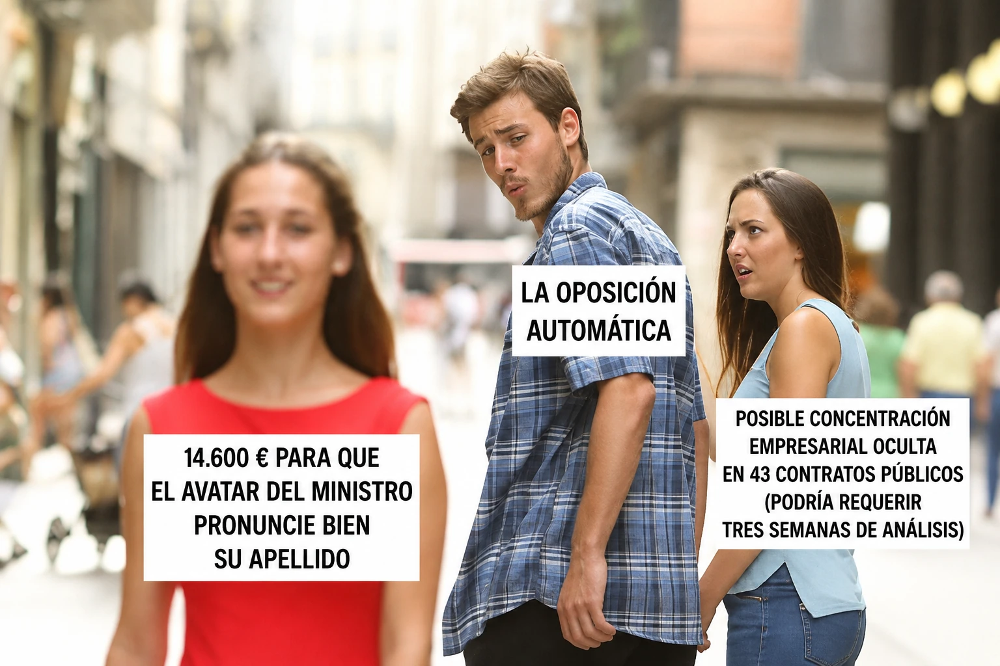

estrategIA #150 ·
El escándalo más fácil de contar
El contexto
El novio distraído representa una oposición atraída por un gasto vistoso y fácil de comunicar. Las cifras y contratos pertenecen al relato ficticio La oposición automática, que pregunta quién decide qué merece atención cuando la IA detecta muchas irregularidades.
Publicado en: estrategIA #150 — La oposición automática
Leer el texto de la imagen
14.600 € PARA QUE EL AVATAR DEL MINISTRO PRONUNCIE BIEN SU APELLIDO LA OPOSICIÓN AUTOMÁTICA POSIBLE CONCENTRACIÓN EMPRESARIAL OCULTA EN 43 CONTRATOS PÚBLICOS (PODRÍA REQUERIR TRES SEMANAS DE ANÁLISIS)